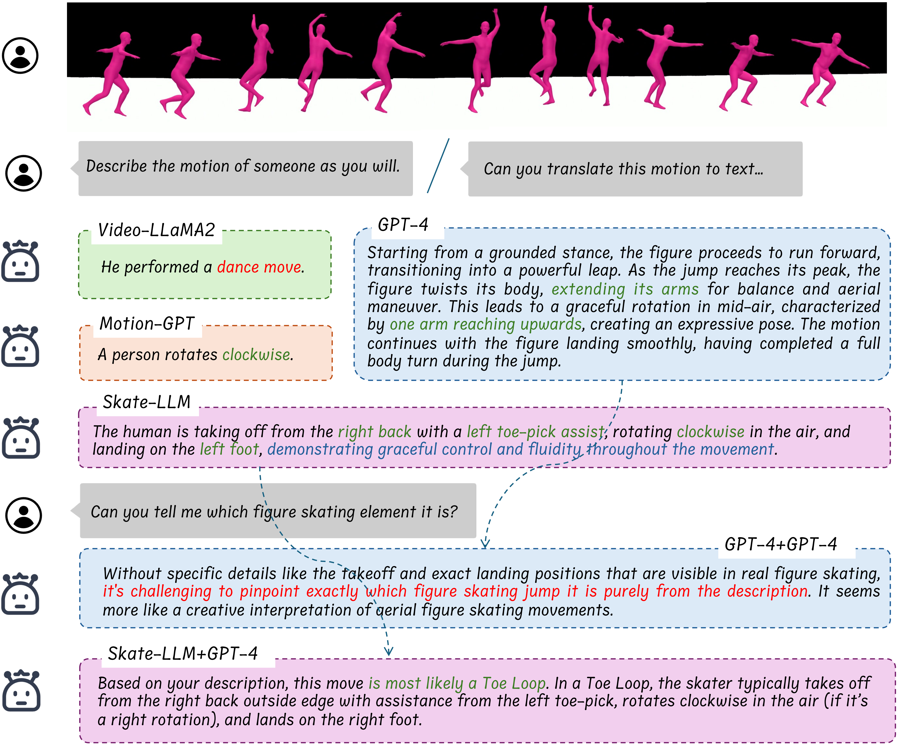

Artistic Sports Understanding
Comprehensive evaluation of technical and artistic performance in sports requiring emotional expression
Our research in artistic sports understanding bridges the gap between technical performance analysis and emotional expression evaluation in sports like figure skating, gymnastics, and dance. We develop multimodal frameworks that capture both the technical precision and artistic interpretation required in these performance-based sports.
Research Challenge
Figure skating, known as the "Art on Ice," represents one of the most artistic sports that challenges computational understanding due to its unique blend of:
- Technical Elements: Jumps, spins, footwork sequences with precise biomechanical requirements
- Artistic Expression: Emotional conveyance, musical interpretation, and choreographic creativity
- Performance Quality: Flow, extension, carriage, and overall presentation
- Emotional Storytelling: Narrative development and character portrayal through movement

Technical Element Recognition
Precise identification and evaluation of athletic components:
- Jump detection and quality assessment
- Spin classification and scoring
- Footwork sequence analysis
- Biomechanical performance metrics
Artistic Expression Analysis
Quantifying emotional and artistic components:
- Musical interpretation assessment
- Choreographic creativity evaluation
- Emotional conveyance metrics
- Performance quality scoring
Integrated Performance Evaluation
Holistic assessment combining technical and artistic dimensions:
- Overall performance scoring
- Technical-artistic balance analysis
- Performance commentary generation
- Judgment consistency evaluation
FSBench Framework
We introduce FSBench, a comprehensive benchmark for artistic sports understanding through figure skating:
FSAnno Dataset
- Large-scale dataset with comprehensive annotations
- Technical and artistic evaluation components
- Multimodal data integration
- Performance commentary generation
Benchmark Components
- FSBench-Text: Multiple-choice questions with explanations
- FSBench-Motion: Multimodal data with QA pairs
- Technical analysis to performance commentary tasks
Key Innovations
- First comprehensive benchmark addressing both technical and artistic dimensions
- Multimodal understanding integrating visual, textual, and motion data
- Emotional expression analysis through performance metrics
- Framework extensible to other artistic sports and performance arts
Research Impact
- Sports Science: Objective evaluation tools for artistic sports training and competition
- Entertainment Technology: Enhanced broadcasting and commentary systems
- Education: Training tools for coaches and judges
- Affective Computing: New paradigms for understanding emotional expression in physical performance